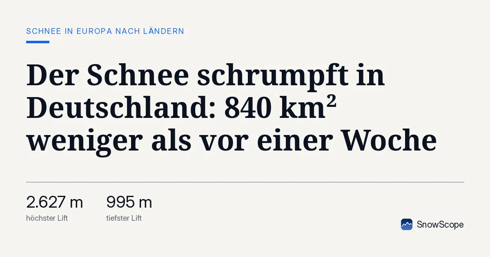

Der Schnee schrumpft in Deutschland: 840 km² weniger als vor einer Woche
Vor sieben Tagen waren in Deutschland rund 1.700 km² weiß, heute sind es 860 km², also 840 km² weniger.
Die Live-Schneeprognose für Zugspitze in der SnowScope-AppSchneehöhen, Pulverschnee-Alarme und 3D-Karte, gratis.
Was diese Woche geschmolzen ist
Verloren geht der Schnee unten. Weiter oben setzt er sich eher, als dass er verschwindet: Die oberen Lifte sind die sichere Wahl.
Schnee bedeckt am 17. November in Deutschland etwa 860 km², 1.250 km² weniger als gestern. Anders gesagt: 2 % des kartierten Berglands sind weiß.
| Skigebiet | Schneehöhe | Neuschnee, 72 h | Erwartet, nächste Tage | Gipfel |
|---|---|---|---|---|
| Zugspitze | 54 cm | 12 cm | 20 cm | 2.627 m |
| Karwendelbahn (Dammkar-Mittenwal | 19 cm | 5 cm | 16 cm | 2.246 m |
| Fellhorn/Kanzelwand | 15 cm | 7 cm | 33 cm | 1.965 m |
| Nebelhorn | 15 cm | 7 cm | 32 cm | 2.213 m |
| Garmisch-Classic | 15 cm | 5 cm | 18 cm | 2.047 m |

Schneebedeckung heute
Vor sieben Tagen waren es 1.700 km², also 840 km² mehr als jetzt. Ab etwa 1.600 m ist der Boden überwiegend weiß.
Schneehöhe nach Höhenlage
Je höher, desto mehr Schnee: zwischen 1.000 und 1.500 m im Schnitt unter 1 cm, 14 % bedeckt; zwischen 1.500 und 2.000 m im Schnitt 2 cm, 59 % bedeckt; zwischen 2.000 und 2.500 m im Schnitt 13 cm, 98 % bedeckt.
Wo man zuerst fahren sollte
Zugspitze liegt vorn mit 54 cm im oberen Bereich.
Danach: Karwendelbahn (Dammkar-Mittenwal (19 cm), Fellhorn/Kanzelwand (15 cm), Nebelhorn (15 cm) und Garmisch-Classic (15 cm).
Zugspitze bekam in drei Tagen 12 cm und könnte bis Freitag, 20. November weitere 20 cm dazubekommen.
In Karwendelbahn (Dammkar-Mittenwal: 5 cm Neuschnee in drei Tagen, bis Freitag, 20. November werden 16 cm mehr erwartet.
Heute sind 48 von 231 Skigebieten in Deutschland weiß.
Der Rest der Auswahl: Fellhorn/Kanzelwand: 15 cm oben, 7 cm in drei Tagen, 33 cm erwartet; Nebelhorn: 15 cm oben, 7 cm in drei Tagen, 32 cm erwartet; Garmisch-Classic: 15 cm oben, 5 cm in drei Tagen, 18 cm erwartet.
Die Aussichten für die Woche
In den nächsten drei Tagen werden bis zu 11 cm erwartet, über die Woche bis zu 31 cm.
Der Samstag, 21. November sticht heraus, mit bis zu 15 cm an einem Tag.
Weiter voraus zeigen die Tage 8 bis 14 bis zu 12 cm an den schneereichsten Hängen.
Skibedingungen
Der Schnee zieht sich nach oben zurück: auf die hohen Lifte setzen, tiefe Talabfahrten meiden.
Die Vorhersage im Blick behalten: Der kommende Schnee kann das Bild schnell ändern.
Neuschnee der letzten drei Tage
Die letzten drei Tage waren trocken oder fast, nirgends mehr als 2 cm.
Wie dieser Start abschneidet
Skigebiet für Skigebiet, heute gegenüber einem normalen 17. November: Zugspitze: 12 cm auf etwa 1.811 m, gegenüber 20 cm in einem normalen Jahr; Karwendelbahn (Dammkar-Mittenwal: 1 cm auf etwa 1.589 m, gegenüber 12 cm in einem normalen Jahr; Fellhorn/Kanzelwand: 2 cm auf etwa 1.442 m, gegenüber 7 cm in einem normalen Jahr; Nebelhorn: 1 cm auf etwa 1.518 m, gegenüber 10 cm in einem normalen Jahr.
0 dieser 4 Skigebiete liegen über ihrer üblichen Höhe für dieses Datum.
Diese Höhen gelten für eine bestimmte Höhenlage jedes Bergs unterhalb des Gipfels und sind daher niedriger als die Werte der oberen Hänge weiter unten.
In früheren Wintern kam der beste Schnee in Zugspitze meist Anfang März / Ende März.
Die Nachbarn heute
Zum Vergleich die Nachbarn am selben Tag: Österreich: 34 % weiß, vorn Kaprun mit 66 cm, bis zu 47 cm in der kommenden Woche; Schweiz: 48 % weiß, vorn Zermatt mit 47 cm, bis zu 129 cm in der kommenden Woche.
Einen Skitag planen
Über 2.000 m ist der Boden fast ganz weiß (98 % bedeckt), die Pisten dort haben eine durchgehende Unterlage.
Zwischen 1.500 m und 2.000 m ist die Decke lückenhaft, rund 59 % weiß: Gras und Steine zwischen dem Schnee.
Unterhalb von 1.000 m sind die Hänge noch fast schneefrei.
Wer den Tag wählen kann, fährt nach dem Samstag, 21. November: Dann kann sich der Neuschnee setzen und die Straßen sind geräumt.
Tipps für Skifahrer
- Nach klarer Nacht ist der Schnee morgens hart: an Südhängen auf die Sonne warten.
- Für die Straßen zu hoch gelegenen Skigebieten können Winterreifen oder Ketten nötig sein.
- Über der Waldgrenze kann der Schnee verfrachtet sein: Grate im Blick behalten.
Zu diesen Zahlen
Die Schneehöhen der Skigebiete sind der meiste Schnee in den oberen Hängen laut SnowScope-Schneemodell (etwa 1 km, Lauf vom 17. November); es sind Schätzungen für eine Fläche, keine Messung an einem Punkt. Werte von Messstationen sind Messungen am angegebenen Tag. Prognosen können sich ändern. Lies vor dem Freeriden immer den offiziellen Lawinenlagebericht.
Diesen Bericht zitieren
Für Forschung, Lehre oder Presse: Zahlen und Grafiken sind unter CC BY 4.0 mit dieser Quellenangabe frei nutzbar.
SnowScope (2026), Der Schnee schrumpft in Deutschland: 840 km² weniger als vor einer Woche, https://snowscope.app/blog/de/2026/11/germany-snow-report-17-november-2026.html, abgerufen am 2026-11-17
SnowScope (Atlas Labs). (2026, November 17). Der Schnee schrumpft in Deutschland: 840 km² weniger als vor einer Woche. SnowScope snow reports. https://snowscope.app/blog/de/2026/11/germany-snow-report-17-november-2026.html
BibTeX
@misc{snowscope2026germanysnowreport17novem,
author = {{SnowScope (Atlas Labs)}},
title = {Der Schnee schrumpft in Deutschland: 840 km² weniger als vor einer Woche},
year = {2026},
month = nov,
howpublished = {\url{https://snowscope.app/blog/de/2026/11/germany-snow-report-17-november-2026.html}},
note = {Published 2026-11-17 12:12 UTC; accessed 2026-11-17}
}· CC BY 4.0 · Methoden, Daten und Werkzeuge →
Zugspitze: Schnee und Temperatur nach Höhe, dieser Winter vs letzter (Werkzeuge) →
Zugspitze folgen
Gratis: eine Nachricht, wenn Neuschnee kommt, und jeden Morgen die Vorhersage.